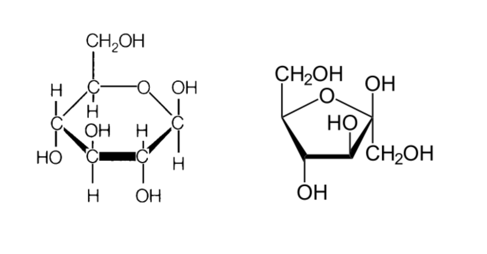
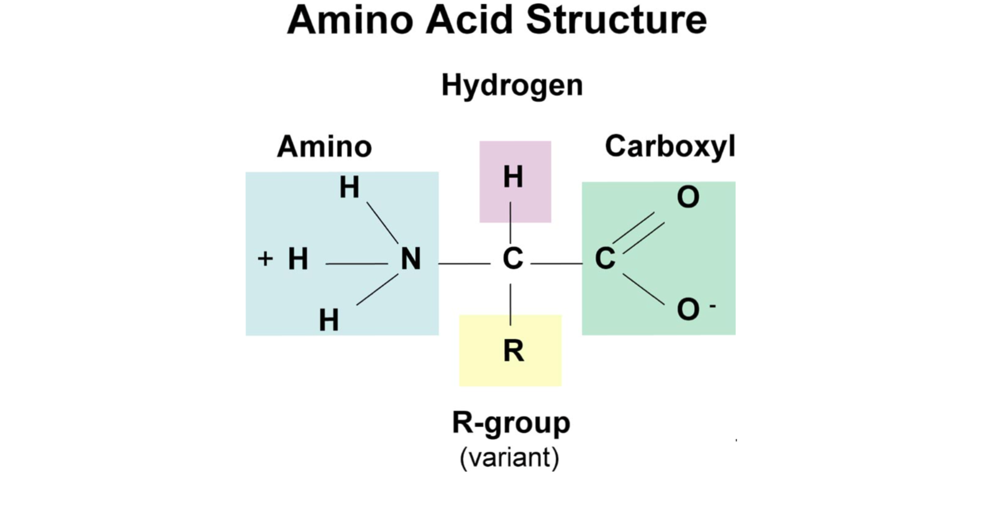
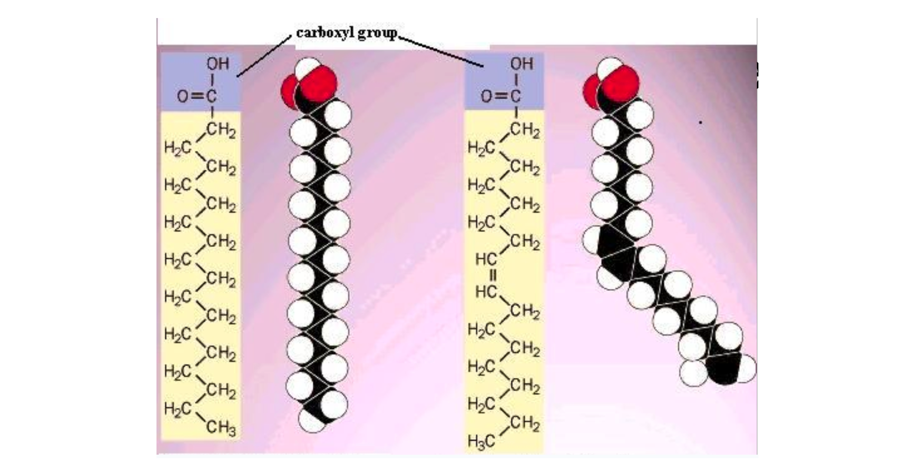
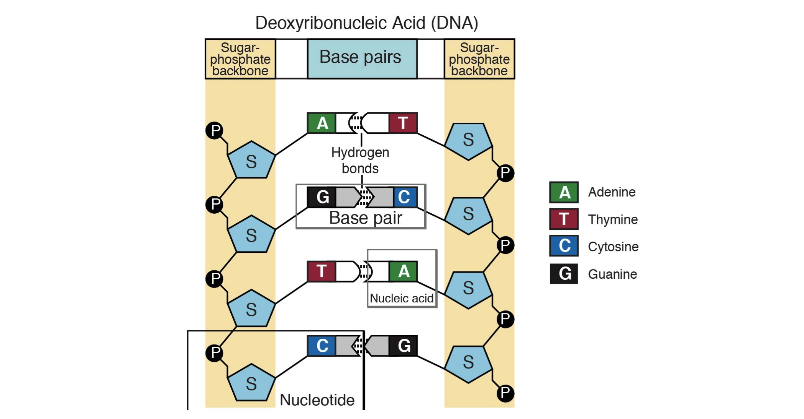

Is as important
as Breathing
About
Eating healthy food is needed for a healthy life. If one decides to only eat some category of food, for example fast food, then they will have oveabundance of certain macromolecules, while a lack of the others.
We have collected some recepies here for you so that you can variate your food in order to achive a balance in all of the macromolecules needed.
Macronutrients
Below is provided information on why you need these four main macronutrients.
Carbohydrate rich food

Carbohydrates are important because they are the source of quick energy. They are commonly found in many foods with added sugar. The carbohydrates found there are simple carbohydrates. These give you short bursts of energy which make you hungry in no time. The complex carbohydrates are found in legumes, starchy vegetables, and whole grain fiber foods. These are harder to break down; therefore, they give you energy over a longer period of time.
Protein rich food

Your body is 92% made out of proteins. Therefore, it is important to have a supply so that the body is able to repair and build itself. Proteins are also enzymes in your body, which means that they speed up certain reactions your body needs to function. If you do not have enough proteins then you would face the issue of weakness and fatigue. This is because proteins are also used by your muscles to restore their energy . This means that eating food high in protein is even more important for athletes.
Lipid rich food

Lipids are the building block for cell walls. They are found mainly in fatty foods. For example, olive oil, meat, and fish. There are different types of fats. Saturated fats and unsaturated fats are a storage for the long term energy storage. They are also used for cell membrane.
Nucleic acid rich food

The nucleic acids are the macromolecules that store the genetic information, as well as read it and follow its directions. They can usualy be found in foods like fish and meats.
©2023- Made by artem adylin